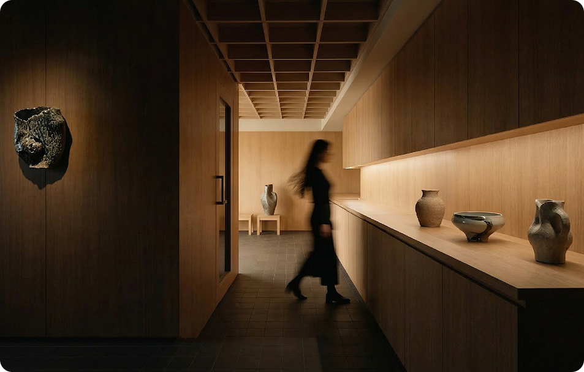

OUR STORY
LOAMO Brand Story
Meaningful Meals, Made Better
아무리 바쁜 날이라도
제대로 담아 먹는 식사는
하루를 다르게 느끼게 합니다.
LOAMO는 그런 순간을 위해
단순히 음식을 담는 그릇이 아니라,
한 끼의 시간을 더 소중하게 만드는 도자를 만듭니다.

-
01.Meaningful
Meaningful Dining
LOAMO는 음식을 담는 순간부터 식사가 달라진다고 믿습니다.한 끼의 시간을 더 의미 있게 완성할 수 있도록음식과 공간을 자연스럽게 돋보이게 하는 그릇을 만듭니다.
-
02.Intentional
Thoughtful Preparation
식사를 준비하는 과정까지 고려해 디자인합니다.음식을 담고, 테이블을 정리하고,차려 먹는 순간이 더 편안하고 자연스럽게 이어지도록균형과 사용성을 함께 담았습니다.
-
03.Everyday
Everyday Living
특별한 날이 아니라 매일의 식사에 사용하기 위해 만들었습니다.일상 속에서 편하게 쓰면서도식탁의 분위기를 더 따뜻하게 만들어주는오래 함께할 수 있는 도자입니다.